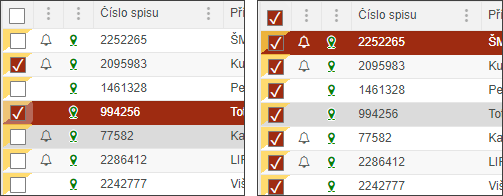

Výběr spisů
Před každým spisem je zaškrtávací pole (checkbox), který umožní uživateli vybrat jeden či více spisů pro další práci. Opakovaným použití se spisy odznačí.
Po takových výběrech se některá akční tlačítka mohou stát nepřístupná, neboť s nimi lze pracovat pouze při výběru například s jedním spisem. Popis chování konkrétních akčních tlačítek při různém výběru je popsán v kapitole Přehled akčních tlačítek.
